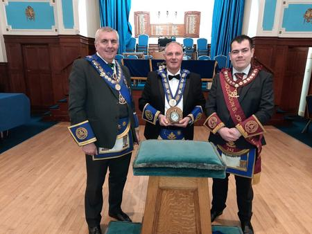

The John Adams Clock
Presentation of the Clock on Thursday 4th May 2023.
From Left to Right:-RWM Alex Hamilton Lodge St Bryde No.579, RWM Stuart McManus Lodge Eastmuir No.1126, RWM Alastair Griffiths Lodge Houston St. Johnstone No.242.
The First Master of Lodge Eastmuir was John Adams of Larchgrove. He was a prominent businessman in the city of Glasgow and a member of both Lodge Trades House No.1241 and the Mother Lodge of Kilwinning. He donated the ground for the formation of Sandyhills Golf Club and was President of the Scottish Automobile Club.
Our lodge was Consecrated on 21st January 1914 by the Provincial Grand Master of Glasgow, Bro. A.A. Hagart Speirs. To commemorate the event, our first RWM Bro. John Adam presented a Car Clock to the Right Worshipful Provincial Grand Master in appreciation. The Foundation Stone of our building was laid on 20th October 1928 once again by the Provincial Grand Master of Glasgow, Bro. A.A. Hagart Spiers of Elderslie who held the clock until his death.
Following the death of Hagart, the clock was inherited by his long serving butler Lindsay Maxwell, who was a member of Lodge Houston St Johnstone No. 242. On Lindsay’s death the clock passed to his son James Maxwell (also a member of Lodge 242) who emigrated to the USA and took the clock with him.
Jimmy as he was known then around 1971 passed the clock on to his nephew William McMaster who was RWM of Lodge Houston St Johnstone No. 242 in 1959/1960. William’s son Kenny McMaster who is also a member of Lodge No.242 and now living in England, inherited the clock from his father and expressed a wish for it to be presented back to Lodge Eastmuir.
He suggested that this be done in memory of his family and his lodge, especially of his late father Past Master William. He requested that it would be fitting if this was done by the brethren of Lodge Houston St Johnstone No.242 to the brethren of Lodge Eastmuir No.1126.
On Thursday 4th May 2023, the clock completed it’s 109 year travels with the RWM Alastair Griffiths of Lodge Houston St Johnstone No. 242 visiting Lodge Eastmuir to present the clock back home to the RWM Stuart McManus.
Secretary Frank Richmond